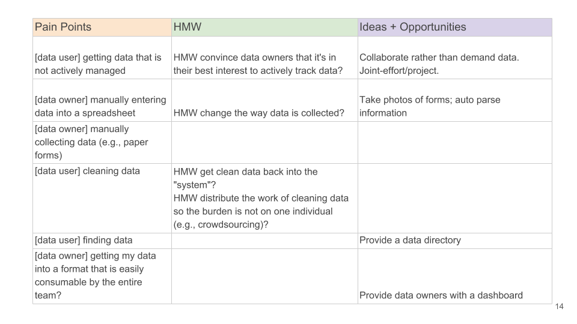

DataHub Discovery
Background
The DataHub project stemmed from leadership’s desire to bridge the numerous data silos across the MIT campus. They envisioned a centralized, web-based platform for the community to store, analyze and share data. The first iteration of DataHub was scoped to serve the Office of Sustainability, a new department on campus that was dependent on data managed by other departments.
My Role
I was asked to conduct user research on MIT administrative staff that would be providing data for the Office of Sustainability. Specifically the team wanted to understand these departments’ end-to-end data workflows.
Methodology
In order to better understand how users did their data workflows, I decided to conduct in-person interviews with the request that the interviewees come prepared with a dataset they could walk us through in their own workspace and using their tools of choice. The goal was to see what they did in addition to what they said.
I was responsible for creating the interview questions, as well as recruiting, scheduling and moderating the interviews.
Results
Personas
I created personas that encapsulated the needs, pain points and goals that I had heard during the interviews.


Revisit Initial Assumptions
After creating the personas, I wanted to find a way in which they could be applied immediately. I decided to revisit the initial assumptions we had as a team about the project and see whether the personas refuted or validated them.
This was an interesting exercise because these assumptions weren’t explicitly stated anywhere; most internal documents focused on what the product would do (features) rather than the problem it was meant to solve.
For example, the DataHub was envisioned as a bridge between those who had data and those that needed it. However, existing bridges, created through back-and-forth conversations, often included additional information pertinent to understanding the dataset (e.g., a dataset’s meta-data). Was the DataHub meant to completely supplant those conversations and if so what meta-data would a dataset need to have in order to be able to exist independently of its owner?
How Might We?
I also wanted to explore how the pain points uncovered during our interviews could be used to drive the project’s next steps.
The idea was to start with the pain point and use it to generate HMW questions that could lead to ideas and opportunities. The table above was a proposal for how this process might work and was meant as a jumping off point for the team rather than a final product since its efficacy would be dependent on the entire team’s participation.
Conclusion
Though my findings were well received by the team, shortly after, the scope of the project changed in two major ways:
1. Rather than target administrators, the stakeholders decided that the DataHub should serve faculty. 2. Because faculty have different data needs than administrators, the team started focusing on creating custom, managed data flows that ended up bypassing the DataHub UI.
That’s the nature of working on something new. What you start on might end up being very different than what you end up with. And that’s okay.